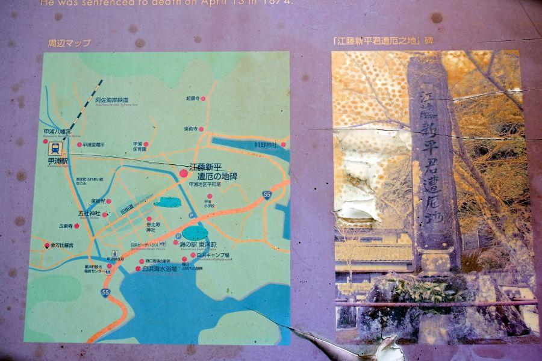
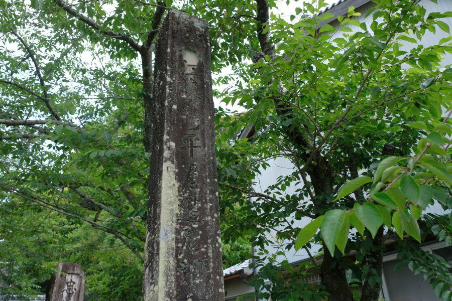
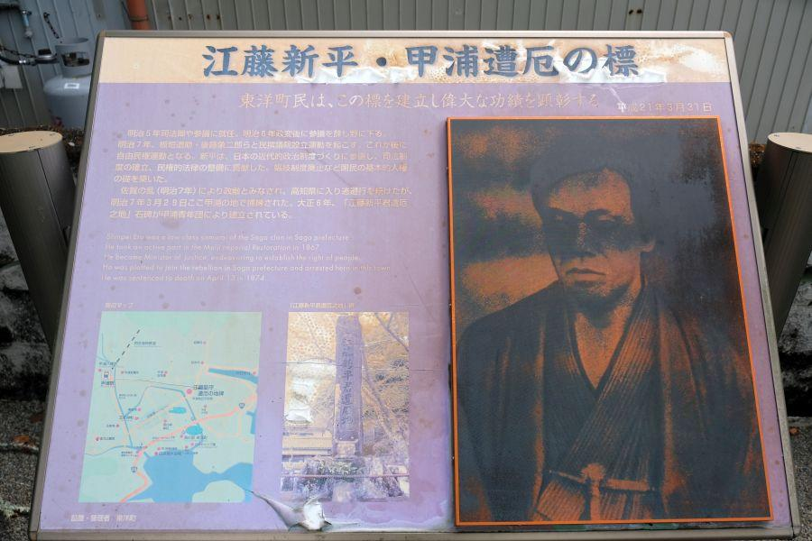
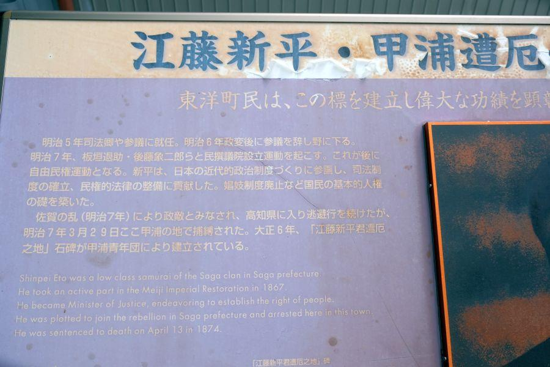
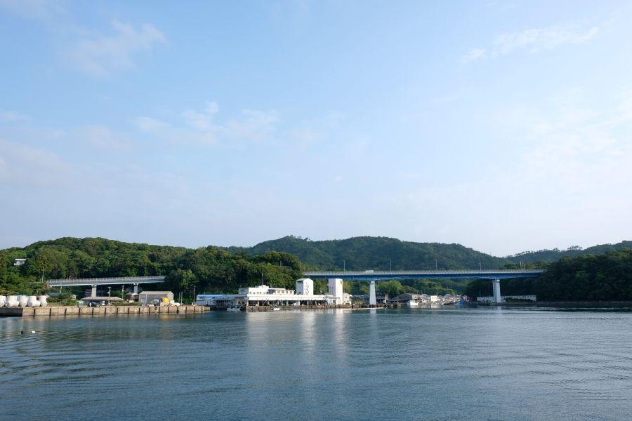

江戸を東京と改めた男の最期の地 < 江藤新平遭厄記念碑 / 高知県東洋町 >

高知県東の入口・東洋町甲浦(かんのうら)。
徳島県との県境近いこの地で、一時は明治新政府の官僚にも名を連ねた幕末の志士の一人が捕らえられたと伝わります。
高知県で最も東に位置する街・東洋町

甲浦がある東洋町(とうようちょう)は、高知県最東部の街。温暖な気候を生かしたポンカンの栽培や、サーフィンのメッカとして知られている。
昭和34年(1959)7月1日に 旧甲浦町・野根町が合併する形で成立したが、庁舎を置く位置が決まらないまま町が発足したため、昭和60年(1985)に現役場庁舎が完成するまで 数年交代で役場が甲浦・野根を行き来していた。現在は両地区の中間にある生見地区に東洋町役場が置かれている。
その志士の碑は、国道55号から少し中に入った旧街道沿いにある。
佐賀の七賢人・江藤新平

江藤新平遭厄記念碑(高知県東洋町)
肥前國佐賀藩(現 佐賀県佐賀市)出身の江藤新平(えとうしんぺい)は、
「佐賀の七賢人(しちけんじん)」
の一人にも数えられる英傑。明治新政府にも参加し 新しく設立された司法省の初代法務卿(ほうむきょう、現 法務大臣)を務めるなど、司法の分野を中心に活躍した。
江戸を東京と改めたのは、江藤新平。
>>佐賀の七賢人
鍋島直正(なべしまなおまさ)
佐野常民(さのつねたみ)
島義勇(しまぎゆう)
副島種臣(そえじまたねおみ)
大木喬任(おおきたかとう)
江藤新平(えとうしんぺい)
大隈重信(おおくましげのぶ)
下野、そして佐賀の乱

しかしながら、明治六年の政変によって政界を離れ、故郷佐賀に下野した。
時を同じくして、佐賀の七賢人の一人である島義勇(しまぎゆう)も 志半ばで佐賀に帰郷。蝦夷地に通じていた島は、それまで無人の原野であった地の開拓を行い、故郷の佐賀や京都を模した碁盤目の街造りの基礎を作った。現在の札幌市です。
地元のリーダー格二名の帰郷は、様々な特権を廃止され 不平を訴える武士たちの拠り所となり、やがてその二人を大将格として、明治7年(1874)2月に佐賀の乱を起こす。
佐賀で反乱が発生したことは、すぐさま時の権力者であり 征韓論を退けた大久保利通の耳に入り、始まったばかりの徴兵令によって集められた軍隊を派遣。反乱軍は当初 佐賀城を制圧するなど勢力を拡大していったが、東京から本隊がやってくると形勢は逆転。反乱は鎮圧された。
逃亡、そして最期

政府軍から逃れた江藤は薩摩へ向かう。
明治六年の政変によって 共に政界を去った西郷隆盛(さいごうたかもり)を訪ね、薩摩士族の挙兵を懇願するためだった。
鰻温泉(うなぎおんせん / 鹿児島県指宿市)で湯治を行っていた西郷は 江藤の申し出を断ったため、今度は九州から海を渡って四国に上陸。高知の林有造(はやしゆうぞう)らに武装蜂起を呼びかけるが、これも相容れられなかった。
そこで上京して岩倉具視に直接会い陳情を行うこと画策。高知を脱出して徳島へ入ろうとしたところ、甲浦付近で捕縛され 佐賀に送還された。
当時 手配人として江藤新平の写真が出回っていたことから、速やかに捕らえることができたと言われているが、この指名手配制度は司法整備を進めた 江藤新平自身が考案したものであり、皮肉にも被適用者第一号になった。
佐賀に送還された江藤新平は釈明の機会も与えられないまま梟首刑(きょうしゅけい)を言い渡され、即日処刑の上 千人塚に晒された。佐賀の乱もう一人のリーダーであり 先に囚われていた島義勇も同日梟首刑に処された。
晒し首のような公開処刑は、司法卿を務める江藤新平の尽力によって廃止が決まっていたが、それを覆す判決となった。
このことは、見せしめである以上に 犬猿の仲であった大久保利通の権力行使との噂がある。同じように戊辰戦争で旧幕府軍を率いた榎本武揚(えのもとたけあき)が無罪であったことと比較して、列強国は「日本は法治国家としてほど遠い」と批判。幕末に締結された不平等条約の一つである領事裁判権の撤廃がなかなか進まなかった遠因の一つとも囁かれた。
明治22年(1889)、大日本帝国憲法発布に伴う大赦令によって 二人は賊名を解かれている。
現在はひなびた港町・甲浦

県境に位置する甲浦は 歴史的に関所の街であったことがあり、昔はどこか物々しい雰囲気があったかもしれません。
現在は、ひなびた港町になっています。
防波堤から海に目をやると、熱帯系の魚が泳いでいるのを目にすることができる。辺りには 南国の海が広がっています。
江藤新平遭厄記念碑
< 自家用車 >
高松駅から 約2時間45分、155km
徳島阿波おどり空港から 約2時間、96km
高知龍馬空港から 約1時間50分、100km
< 公共交通機関 >
阿佐海岸鉄道 甲浦駅下車、徒歩約10分
※ 主な地点からの最速・最短距離
関連記事